URBAN
INTERIOR.
The project carries the philosophy of the Village Institutes — the early Republic's rural production and education reform — into the dense urban fabric of Saltak Avenue. The principle of “local materials and collective production” is reimagined as an “urban interior”, standing against the enclosed, commodified spaces of the neoliberal city.
Workshops and open areas turn the individual from a mere consumer into a productive subject: not just a school, but an urban apparatus that feeds the social fabric and reclaims the public realm.
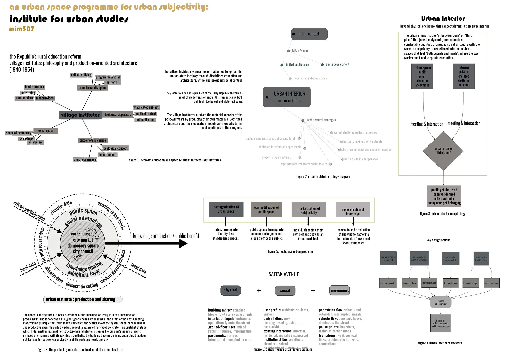
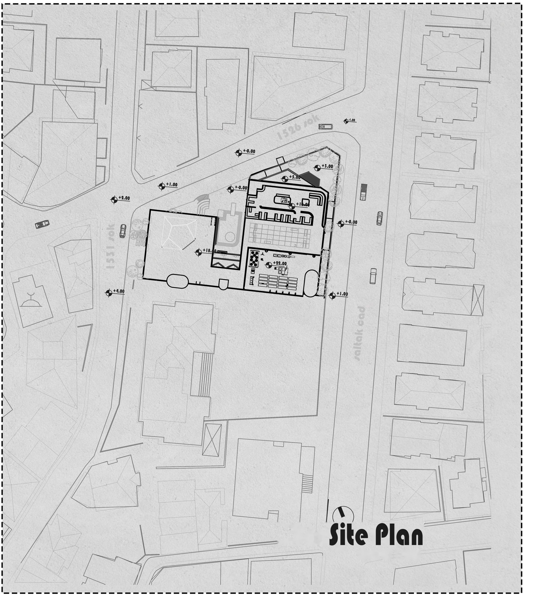
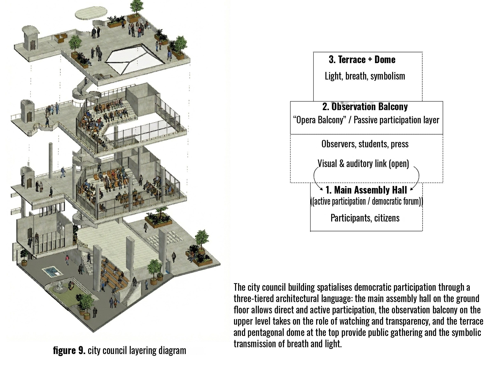
THREE
LAYERS.
The building organises democratic participation in three layers: the ground floor hosts active public assembly, the upper level offers transparency through observation, and the rooftop terrace and dome act as a symbolic civic space for light, air and collective gathering.


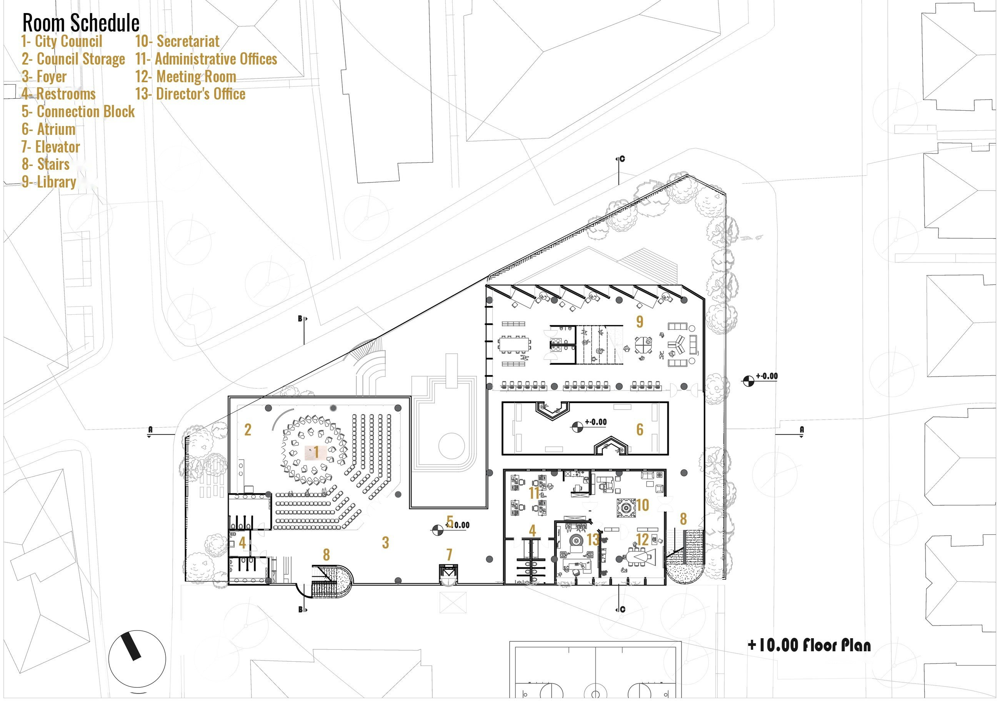
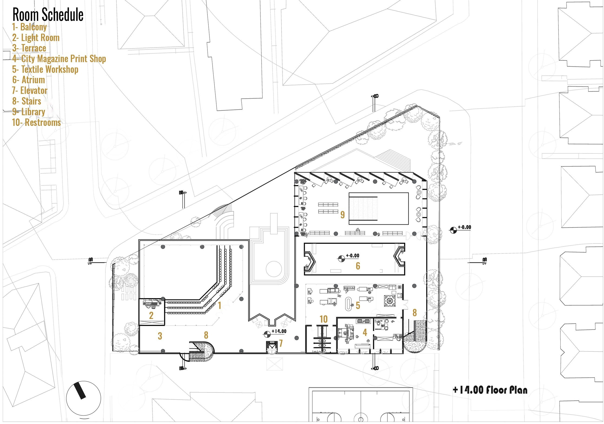
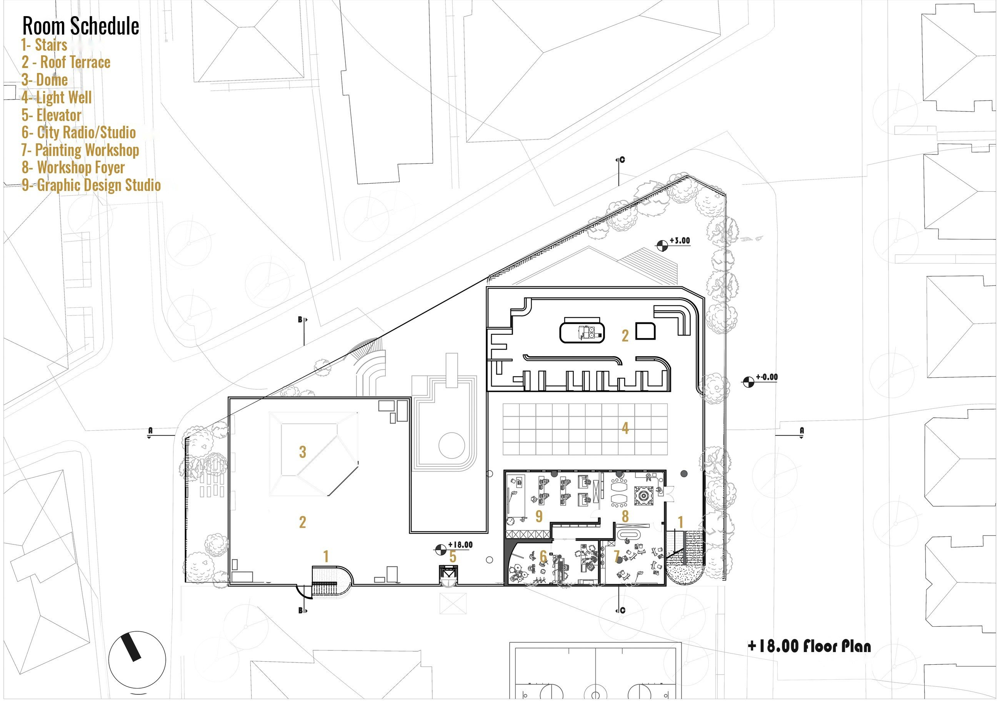
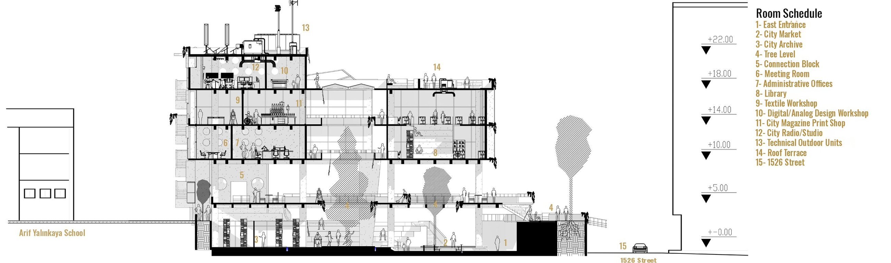
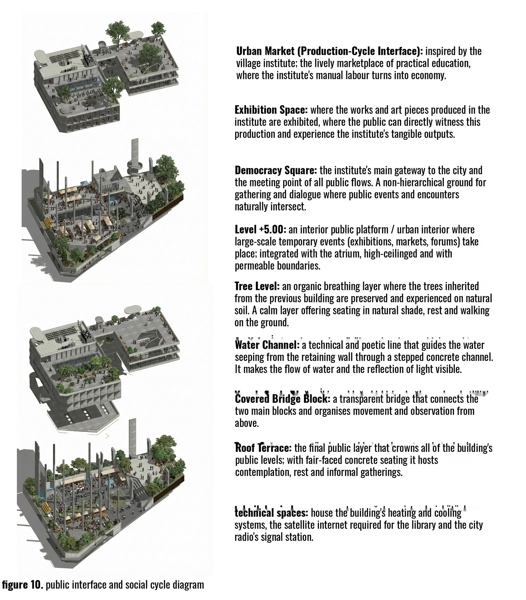
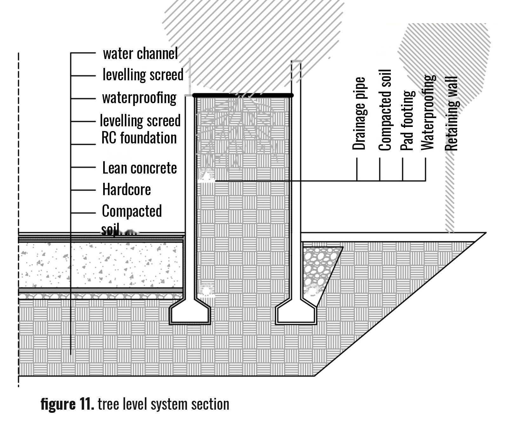

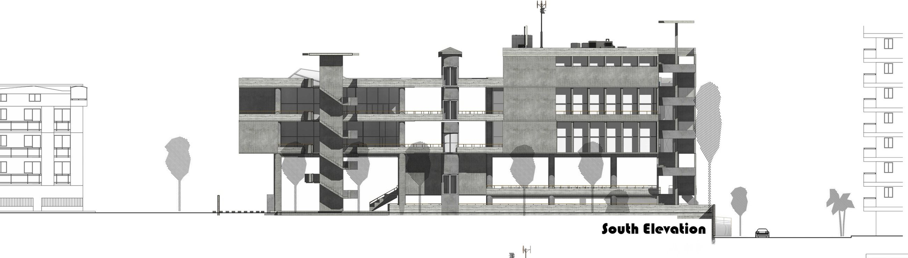


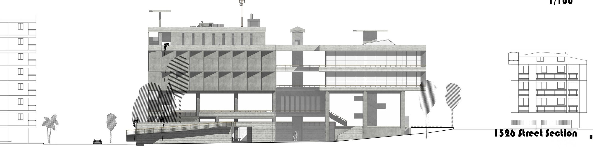